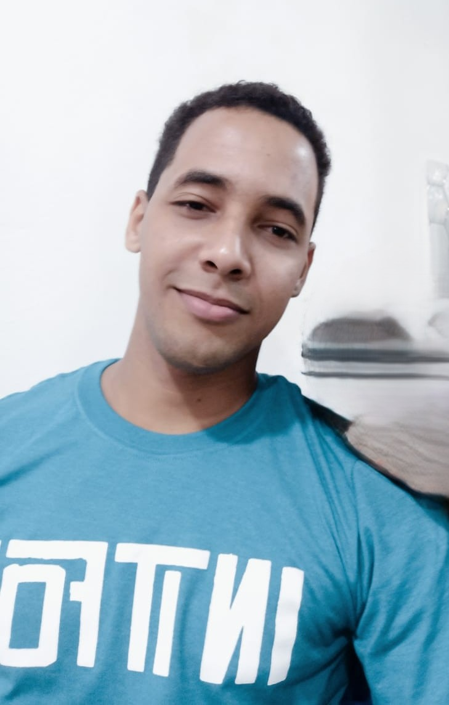

Nombre: Esbenni Johan Frias Morel
Matricula: 100621819
Carrera: Licenciatura en Informatica
Soy estudiante de Licenciatura en Informatica y actualmente estoy dando mis primeros pasos en el mundo de la programacion y el desarrollo de software. Aunque todavia estoy aprendiendo, me interesa conocer cada vez mas sobre la tecnologia y descubrir oomo puedo utilizarla para crear soluciones y desarrollar nuevos proyectos. Mi objetivo es continuar desarrollando mis conocimientos y habilidades en informatica, adquirir experiencia y, con el tiempo, poder participar en proyectos cada vez mas completos.
Asignaturas inscritas 2026-02:
Horario de clases:
Correo: esbenni22@gmail.com